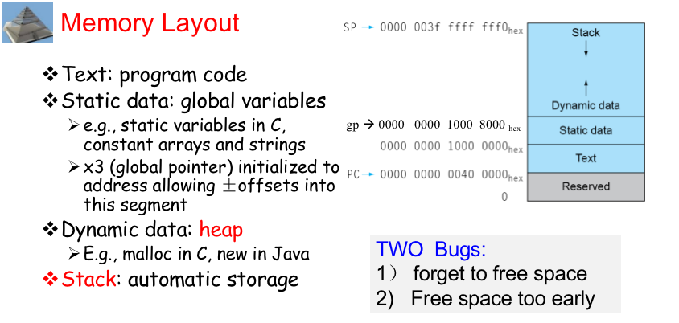
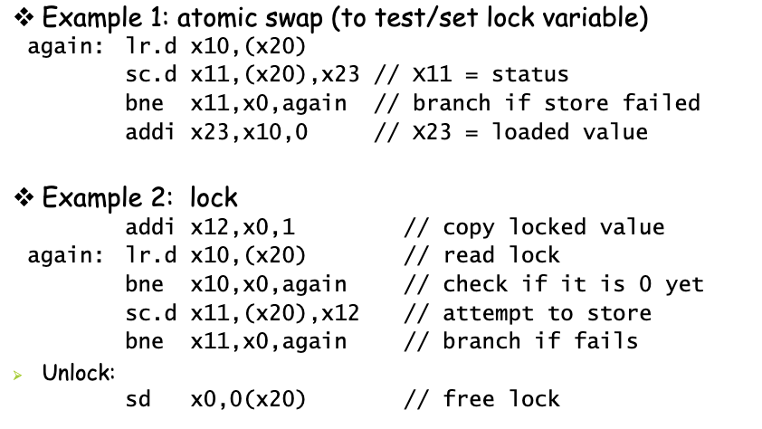

Chap2:Language of the Computer(RISC V)¶
Summary
Instruction Characteristics¶

-
操作数位宽可以不同，可以是立即数/寄存器/内存
-
Load/Store 结构
-
指令分类：Load/Store结构将指令分为两类：加载（Load）指令和存储（Store）指令。这两类指令分别用于从内存中加载数据到寄存器或将寄存器中的数据存储到内存中
-
数据传输：在Load/Store结构中，只有Load和Store指令能够直接访问内存。其他指令，如算术运算指令或逻辑指令，必须首先将数据加载到寄存器中，然后执行操作，最后再将结果存回内存
Operations of the Computer Hardware¶
Regisers¶
- 32 registers in RISC-V
- 64 bits for each register in RISC-V
Sumary

- 为什么内存是 \(2^{61}\) 个 doublewords?
可以表示的地址有这么多，因为我们以 64 位寄存器为基址，可以表示的双字就是 \(2^{64}/2^3=2^{61}\) (这里 \(2^3\) 表示 8 个字节，即双字). 即我们的load指令可以访问的范围有这么大。 - for
x0: 因为经常有 0 参与计算，将其存在一个寄存器中，便于计算
Memory Operands¶
Data transfer instructions * Load: Load values from memory to register * Store: Store result from register to memory; store doubleword
Memory is byte addressed.
-
RISC-V is Little Endian

-
RISC-V dose not require words to be aligned in memory : To Save Memory
words align: A word is 4 byte
我们要求字的起始地址一定要是 4 的倍数 : 访存更加方便
Data Transfer instruction¶
- store 指令没有目的寄存器.
- Array are in the memory -- Stack.
Example


- note
0(x5)x5is for 偏移
Registers vs. Memory¶
- Registers are faster to access than memory
- Operating on memory data requires loads and stores
- Compiler must use registers for variables as much as possible
- Spilling Registers : putting less comonly used variables into memory
Constant or Immediate Operands¶
Immediate: Other method for adding constant
-
Avoids the load instruction
-
Offer versions of the instruction
e.g.addi x22, x22, 4

- Design Principle 3 - Make the common case fast.
Representing Instructions in the Computer¶
Translating assembly into machine instruction

R-format instructions¶

- opcode: operaion code
- rd: destination register number
- funct3: 3-bit function code(additional opcode)
eg.load byte / load half - rs1/rs2: the first/second source register number
- funct7: 7-bit function code(additional opcode)
I-format Instructions¶

- Immediate arithmetic and load instructions
e.g. addi, ld
-
rs1: source or base address register number
-
immediate: constant operand, or offset added to base address
将 rs2, funct7 合并了，得到 12 位立即数

S-format¶
- rs1: base address register number
- rs2: source opearand register number
- immediate: Split so that rs1 and rs2 fields always in the same place.
Sumary

Example


Stored Program Computer

- See Slides Trojan 密码窃取 拳击游戏
Sumary
Logical Operations¶
| Operation | C | Java | RISC-V |
|---|---|---|---|
| Shift left | << | << | slli |
| Shift right | >> | >>> | srli |
| Bit-by-by AND | & | & | and, andi |
| Bit-by-by OR | | | | | or, ori |
| Bit-by-by XOR | ^ | ^ | xor, xori |
| Bit-by-by NOT | ~ | ~ | - |
- note
0(x5)x5is for 偏移
Shift¶

- I 型指令
- 为什么还有
funct6: 移位不需要这么多立即数，只要六位 (\(2^6=64\)) 即可。 - 左移 i 位相当于乘 \(2^i\), 右移 i 位相当于除 \(2^i\).
AND¶

OR¶

XOR¶

- Useful for
not--xor 1111111...
Instructions for making decisions¶
Branch instructions¶
RISC-V assembly code
bne x22, x23, ELSE ; go to ELSE if i != j
add x19, x20, x21 ; f = g + h ( skipped if i not equals j)
beq x0, x0, EXIT ; as jump (unconditional branch)
ELSE: sub x19, x20, x21; f = g - h ( skipped if i equals j )
EXIT:
bne
beq
blt rs1, rs2, L1;if (rs1 < rs2) branch to instruction labeled L1
bge rs1, rs2, L1;if (rs1 >= rs2) branch to instruction labeled L1
Example

¶
- Decide by considering which part (A or B) is more likely to be executed.
Compare Operations¶
Signed integer
slt ：Set on less than
slti ：Set on less than immediate
Unsigned integer
sltu ： Set on less than
sltiu ： Set on less than immediate
Slt还有与立即数的比较
Slt, slti针对有符号数，sltu sltiu针对无符号数不同的比较指令运行到同一个操作数上，结果也是不一样的将有符号数作为无符号数来处理，是检验0<=x<y的低开销方法，常用于检查数组的下标是否越界。
- MIPS里进行分支判断是用
slt根据比较结果设置寄存器，然后用beq或者bne来进行分支判断，blt,bge这些指令是作为伪指令 - MIPS的这种方法可以使处理器数据通路简单一些，但是需要更多的指令来执行程序
- Mips体系结构没有包括专门的“小于时分支”指令，因为它太复杂了，不符合设备简单性：它不仅会延长时钟周期，也会增加平均执行每个指令的周期数: 两条更快的指令（beq, bne）更有用
slt x5, x6, x7 ; x5 = 1 if x6 < x7 ( a < b)
bne x5, x0, Less ; go to Less if x5 != 0 (that is, if a < b)
……
Less:
Reduce an index-out-of-bounds check
将有符号数当作无符号数处理，给我们提供了一种低成本的方式检查是否0<=x<y常用于检查数组下标是否越界
- 无符号数比较
x<y，在检测x<y的同时，也检测了x是否为负数 - RISC-V version:
bgeu x20, x11, IndexOutofBounds
Loop statements¶
Example

Case/Switch¶
-
实现switch的一种方法是借助一个条件判断序列,把switch转化为一系列的
if-then-else -
另一种更有效的方法是通过编码形成一个转移地址表，就是分支指令序列地址表；程序通过查找转移地址表来获取目标地址，并跳转到相应的分支指令序列
转移地址表就是一个字数组，数组中的元素对应于代码中各个标号的地址
为支持这种情况，有一条间接跳转指令，jalr : 无条件地转移到某个寄存器指定的地址.
A basic block is a sequence of instructions with
- No embedded branches (except at end)
- No branch targets (except at beginning)
A compiler identifies basic blocks for optimization.
An advanced processor can accelerate execution of basic blocks.
Supporting Procedures in Computer Hardware¶
Procedure Call Instructions¶
Procedure call: jump and link
jal x1, ProcedureLabe
- lAddress of following instruction put in x1
- Jumps to target address
如果我们有一个过程的标签为
MyProcedure，则jal x1, MyProcedure将会将当前地址保存到寄存器x1中，并跳转到MyProcedure标签所代表的代码处执行
Procedure return: jump and link register
jalr x0, 0(x1)
- Like jal, but jumps to 0 + address in x1
- Use
x0asrd(x0 cannot be changed) - Can also be used for computed jumpse.g., for case/switch statements
无条件跳转：
jal x0, Label，因为x0硬连线到0，效果等同于丢弃返回地址使用
x0寄存器作为目标寄存器（rd），即返回地址将被存储在x0中。由于x0寄存器的值永远是0，因此实际上这个操作可以视为将返回地址丢弃
Using More Registers¶
Registers for procedure calling
x10~ x17: 8 argument registers to pass parameters or return values
x1: one return address register to return to origin point.
- 把数据放入栈叫push，移除数据称为出栈,pop，栈指针，一个特殊的寄存器，sp（x2)，用于保存被调用者所需的寄存器
栈是内存里的一块存储结构，栈底是高地址，栈增长是地址从高到低，push的时候，sp减小，pop, sp增大

- 先放 i 然后 A[2] A[1].. ---符合高级语言访问顺序
C code
long long int leaf_example (
long long int g, long long int h,
long long int i, long long int j) {
long long int f;
f = (g + h) - (i + j);
return f;
}
Arguments g, …, j in x10, …, x13.
fin x20 temporaries .
x5, x6 .
Need to save x5, x6, x20 on stack.
Assembly
leaf_example:
;Save x5, x6, x20 on stack
addi sp,sp,-24
sd x5,16(sp)
sd x6,8(sp)
sd x20,0(sp)
add x5,x10,x11 ;x5 = g + h
add x6,x12,x1 ;x6 = i + j
sub x20,x5,x6 ;f = x5 – x6
addi x10,x20,0 ;copy f to return register
;Restore x5, x6, x20 from stack
ld x20,0(sp)
ld x6,8(sp)
ld x5,16(sp)
addi sp,sp,24
jalr x0,0(x1)
Non-Leaf Procedures¶
Caller save：
- return address
- arguments
- important temporaries ( T registers) that will be used after call
Callee save: any S registers used for local variables
x5 – x7, x28 – x31: temporary registers. Not preserved by the callee.
x8 – x9, x18 – x27: saved registers. If used, the callee saves and restores them.
- Nested:
Main:
....
;n is reg x28
add x10,x0,x28
Jal fact
;Nonleaf : save return address
fact: addi sp, sp,-16 ;adjust stack for 2 items
sd x1, 8(sp) ;save the return address
sd x10, 0(sp) ;save the argument n
addi x5, x10, -1 ;x5 = n - 1
bge x5, x0, L1 ;if n >= 1, go to L1(else)
addi x10, x0, 1 ;return 1 if n <1
addi sp, sp, 16 ;Recover sp (Why not recover x1and x10 ?)
jalr x0, 0(x1) ;return to caller
L1: addi x10, x10, -1 ;n >= 1: argument gets ( n - 1 )
jal x1, fact ;call fact with ( n - 1 )
add x6, x10, x0 ;x6 = fact(n-1)
ld x10, 0(sp) ;restore argument n
ld x1, 8(sp) ;restore the return address
addi sp, sp, 16 ;adjust stack pointer to pop 2 items
mul x10, x10, x6 ;return n*fact ( n - 1 )
jalr x0, 0(x1) ;return to the caller


X10-x17returen
Summaries of procedure(MIPS)¶
- The
jalinstruction is used to jump to the procedure and save the current PC+4 into the return address registerX0 - Arguments are passed in
$a0-$a3return values in$v0-$v1 - Since the callee may over-write the caller’s registers, relevant values may have to be copied into memory
- Each procedure may also require memory space for local variables – a stack is used to organize the memory needs for each procedure


栈还需要存储一些局部变量，例如局部数组或结构, 这些变量时局部于过程，不适用于寄存器，而是保存在栈中
栈中包含过程保存的寄存器和局部变量的段称为过程帧(frame)或者活动记录(activation record)
在过程中栈指针可能改变，如果利用栈指针和地址运算来完成对局部变量的引用，非常不方便,因此，定义一个帧指针fp(x8)，指向过程帧的第一个双字，这样帧指针就提供了一个稳定的基寄存器，对局部变量的引用就变得非常简单
如果过程中栈内没有局部变量，编译器一般不设置和不恢复帧指针以节省时间,当使用帧指针时，在调用中使用sp来进行初始化，且可以使用fp 恢复 sp.
注意, 不管是否使用显式的帧指针，栈上都会显示一条活动记录。我们可以通过维护稳定的sp来减少对fp的使用
- Have to PUSH FP
- Then, we access local variables or.. by accessing FP pointer
Memory Layout¶
除了动态变量，C程序员还需要为静态变量和动态数据结构分配内存空间
这个图展示了运行linux OS时程序和数据在RISC-V内存分配的约定,这些地址只是一种软件规定，并不是RISC-V体系结构的一部分。
栈由内存高地址开始，向下增长:内存低地址段先是保留区域，然后时机器代码的存储区域，称为正文段，之上是静态数据段，用于存储常量和其他静态变量的空间。类似链表的数据结构通常会随着生命期增长或者缩短，这类数据结构对应的段称为堆(heap),它放在内存中,位于静态数据之后
栈和堆相互增长，在两个段此消彼长的过程中达到内存的高效使用,C语言通过显示函数malloc(), free()分配和释放空间，容易导致漏洞。忘记释放会导致“内存泄漏”（消耗掉太多内存导致操作系统崩溃），过早的释放会导致“悬空指针”（指针指向程序从未访问的位置）
Jave使用自动内存分配和垃圾回收机制来避免这类错误

communication with people¶
Byte/Halfword/Word Operations¶
Load byte/halfword/word: Sign extend to 64 bits in rd • lb rd, offset(rs1) • lh rd, offset(rs1) • lw rd, offset(rs1) Load byte/halfword/word unsigned: Zero extend to 64 bits in rd • lbu rd, offset(rs1) • lhu rd, offset(rs1) • lwu rd, offset(rs1) Store byte/halfword/word: Store rightmost 8/16/32 bits • sb rs2, offset(rs1) • sh rs2, offset(rs1) • sw rs2, offset(rs1)
String¶
Three choices for representing a string * Place the length of the string in the first position * An accompanying variable has the length * A character in the last position to mark the end of a string
void strcpy ( char x[ ] , char y[ ] )
{
size_t i ;
i = 0 ;
while ( ( x[ i ] = y[ i ] ) != ‘\ 0’ ) /* copy and test byte */
i += 1 ;
}
strcpy :
addi sp,sp,-8
sd x19,0(sp)
add x19,x0,x0
L1:
add x5,x11,x19 ;x5 = &y[i]
lbu x6,0(x5) ;x6 = y[i]
add x7,x10,x19 ;x7 = &x[i]
sb x6,0(x7) ;x[i] = y[i]
beq x6,x0,Exit ;if y[i] == 0, exit
addi x19,x19,1 ;i += 1
jal x0,L1
Exit:
ld x19,0(sp)
addi sp,sp,8
jalr x0,0(x1)
x5 – x7, x28 – x31: temporary registers : Not preserved by the callee
RISC-V Addressing for Wide Immediate & Addresses¶
For occasional 32-bit constant lui rd,constant
* copy the 20-bit constant to the upper 20 bits of rd
* Extends the constant to 64 bits by setting the lower 12 bits to 0
Better:
* lui rd,constant[31:12]
* ori rd,rd,constant[11:0]
Branch Addressing¶
- Use offset addressing for branches
- The lowest bit of the offset is always 0! Not stored.
More specifically
beq x0,x0 LoopOP + func3 → beq rs1 → x0 rs2 → x0 offset = -20 = 111111101100 截断最后一位，得到 11111110110 im[12] + im[10:5] + im[4:1] + im[11] + 0 rd/offset -> im[4:1]+im[11] im[12] : sign bit -
Offset > 12 bits ? Rewrite it to offer a much greater branching distance:
JALinstruction: 20-bit offset How to know the offset? -
Label Table
Decoding Machine Language¶
Parallelism and Instructions : Synchronizatio¶

Translating and Starting a Program¶
- Compiler translates high-level language to assembly
- Assembler translates assembly to machine language
- pseudo-instructions
- symbol table:a table that mathches labels to addresses
- Producing an object file of UNIX
Object File: Linking Object modules Dynamic Linking Only link/load the needed library routines when it is called * Requires procedure code to be relocatable * Avoids image bloat caused by static linking of all (transitively) referenced libraries * Automatically picks up new library versions
Lazy Linkage Second time the link is called,much faster.
执行文件 * 在硬盘上，非执行态：如病毒样本 进程 * 转载到内存 * 可以细分为多个可以并发执行的线程：如激活态病毒 * 如何看线程: 任务管理器
Example¶
void swap ( long long v[ ] , size_t k )
{
long lon temp ;
temp = v[ k ] ;
v[ k ] = v[ k + 1 ] ;
v[ k + 1 ] = temp ;
}
swap:
slli x6,x11,3 //x6 = k*8
add x6,x10,x6 //x6 = &v[k]
ld x5,0(x6) //x5 = v[k]
ld x7,8(x6) //x7 = v[k+1]
sd x7,0(x6) //v[k] = v[k+1]
sd x5,8(x6) //v[k+1] = v[k]
jalr x0,0(x1) //return
void sort (long long v[ ] , size_t n )
{
size_t i , j ;
for ( i = 0 ; i < n ; i + = 1 ) {
for ( j = i - 1 ; j >= 0 && v[j] > v[j+1] ; j -= 1 )
swap ( v , j ) ;
}
}
sort:
addi sp,sp,-40
sd x1 ,32(sp)
sd x22,24(sp)
sd x21,16(sp)
sd x20,8(sp)
sd x19,0(sp)
for1tst:
bge x19,x20,exit1
....
exit2:
addi x19,x19,1
j for1tst
exit1:
ld x19,0(sp)
ld x20,8(sp)
ld x21,16(sp)
ld x22,24(sp)
ld x1,32(sp)
addi sp,sp,40
jalr x0,0(x1)
创建日期: 2024年3月29日 14:37:25